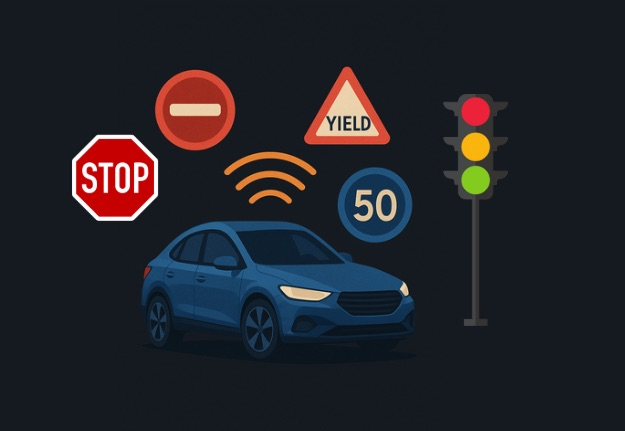
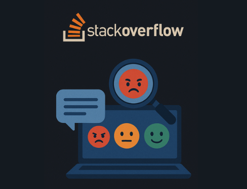

About Me
I'm a penultimate Data Science and Analytics undergraduate at NUS. I've developed a strong foundation and passion for machine learning and AI — shaped by coursework, internships, and personal projects.
- ➤ My interests lie in Large Language Models, Computer Vision, and Natural Language Processing.
- ➤ I've worked on projects ranging from RAG-powered LLMs to image classifications.
- ➤ I actively partcipate in hackathons, exploring areas from multimodal AI systems to predictive analytics.
Outside of academics, I enjoy exploring new tech stacks, connecting with people, and discovering stories through travel and film.
Technical Skills
Programming
Python
R
SQL
Java
Libraries & Frameworks
Pandas
NumPy
Scikit-learn
TensorFlow
OpenCV
LangChain
Tools & Platforms
AWS Sagemaker
GCP
Tableau
Git
OpenAI
Hugging Face
Experiences
Data Science Intern @ SkillsFuture Singapore
May 2024 – Aug 2024
- ➤ Worked on fraud analytics using unsupervised learning techniques (Autoencoders, Clustering).
- ➤ Built Tableau dashboard to track corporate KPIs for C-suite executives.
Data Science Teaching Assistant @ NUS
Jan 2024 – May 2024
- ➤ Coached students on core data science concepts: Exploratory Data Analysis, Machine Learning models and Model Evaluation Techniques.
Projects
RAG PDF Question Answering System
RAG • LLM • FAISS • LangChain • Streamlit
- ➤ Built an end-to-end Retrieval-Augmented Generation (RAG) pipeline to answer PDF queries.
- ➤ Integrated LangChain with OpenAI and HuggingFace models using sentence embeddings.
- ➤ Utilised FAISS for vector search and deployed the system with Streamlit.
Multimodal Travel Planner
Multimodal AI • Computer Vision • LLM • Streamlit
- ➤ Built a smart itinerary planner that recognises destination images using Google Cloud Vision and retrieves proximity based recommendations via Google Maps.
- ➤ Used GPT4o-mini to generate coherent multi-day itineraries.
- ➤ Designed as an interactive Streamlit application.
Traffic Sign Classifications
Computer Vision • CNN • Hyperparamter tuning
- ➤ Leveraged on Deep Learning framework to develop and fine-tuned a Convolutional Neural Network (CNN) to classify traffic signs across 23 categories, achieving 99% test accuracy.
- ➤ Enhanced model reliability through feature preprocessing, data augmentation, hyperparameter tuning, and LIME-based feature interpretability.
Stack Overflow Sentiment Analysis
Sentiment Analysis • Data Visualisation
- ➤ Conducted sentiment analysis and demographic segmentation identifying key trends influencing AI adoption across demographic groups.
- ➤ Report highlights visualisation of sentiment distributions and correlations among demographics.
Predictive Health Analytics
Exploratory Data Analysis • Supervised Learning
- ➤ Developed and fine-tuned supervised learning models for diabetic status prediction, achieving an accuracy rate of 75%